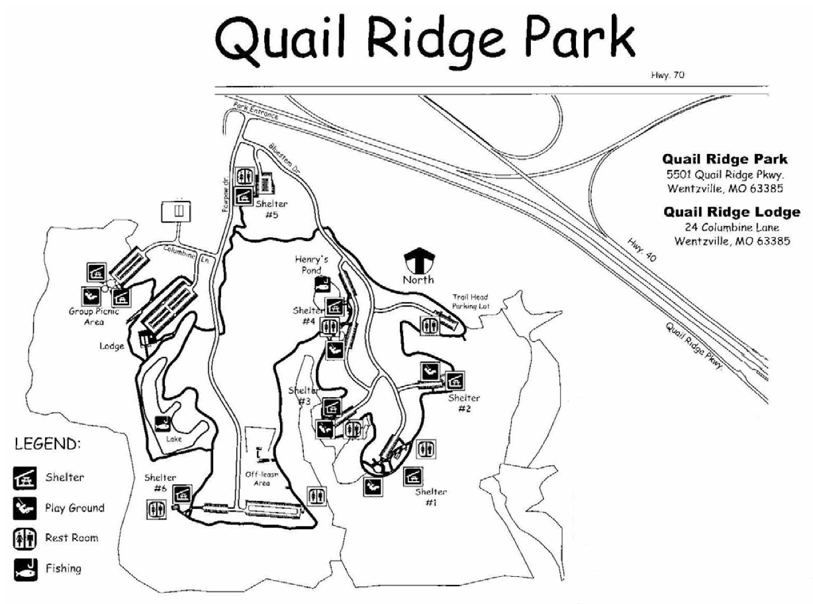

Tami Volkmann's
50th Birthday
I'm throwing a SURPRISE party
for my lovely wife
to celebrate her 50th birthday.
It will be on Sunday, September 4 at 1 p.m.
The party will be at Quail Ridge Park in Wentzville, Missouri.
I know that's a long drive for some of you.
I picked that location for several reasons.
- Tami likes that park.
- Tami likes dogs and there is a dog park inside the park.
- I was able to reserve a shelter (#6)
that accomodates up to 100 people.
The shelter is very near the dog park.
It is in the lower-left corner of the map below.
The party can go on even if it rains because
there is plenty of room in the shelter.

Directions
- If you are coming the north side of St. Charles,
take 70 west to 40/64 east.
- If you are coming the south side of St. Charles,
take 40/64 west.
- Exit at the Prospect Rd.
- Go west on Prospect Rd.
- Go north (right) on Duello Rd.
- That turns into Quail Ridge Pkwy.
- Go south (left) on Pawpaw Rd.
- You will pass the dog park on your left.
- Turn right when that road deadends.
- There is parking for 30 cars there.
- Walk to the shelter which is west of the parking lot.
Your dogs are invited too!
Check back later for details like
the food that will be provided.
For any other questions and for RSVPing,
call me (Mark) on my cell phone at 314-398-6537
or email me at r.mark.volkmann@gmail.com.